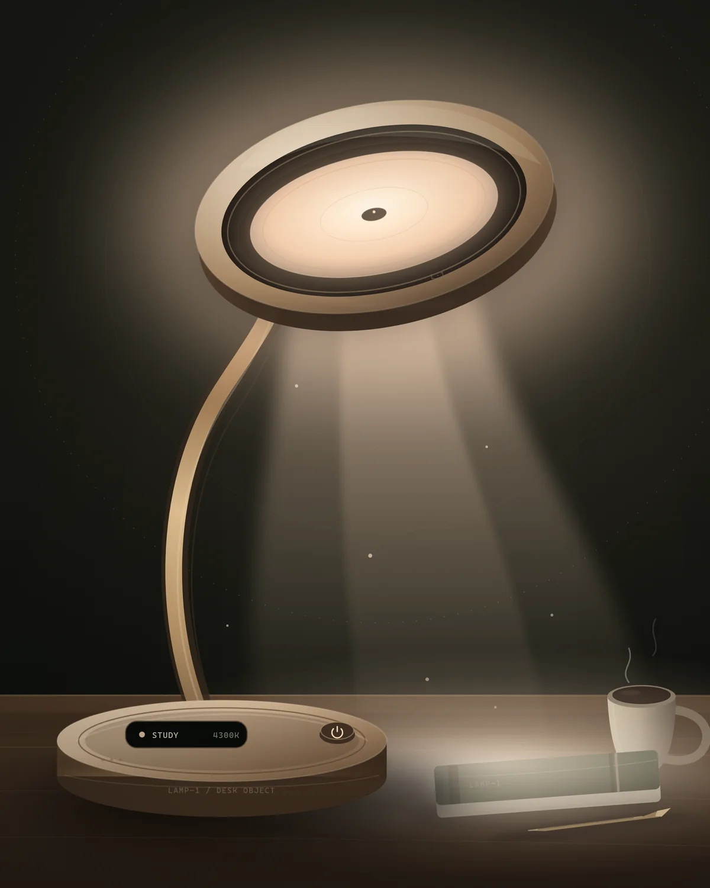
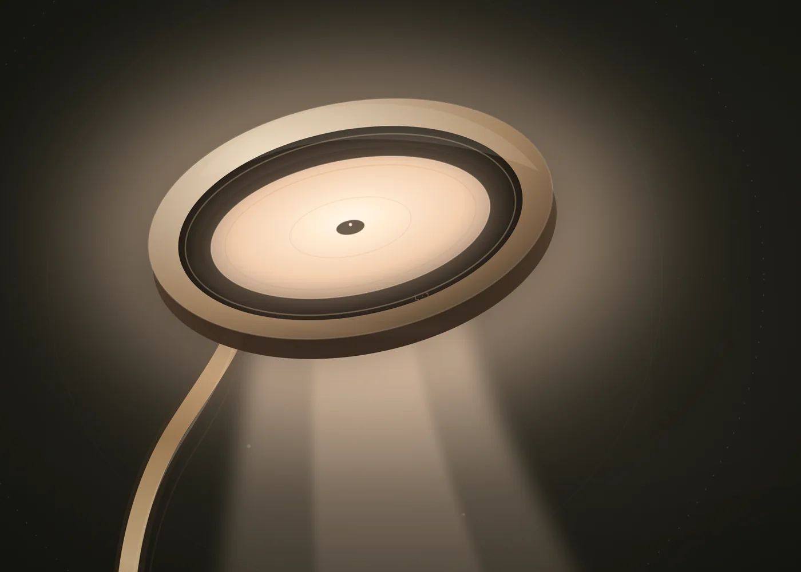
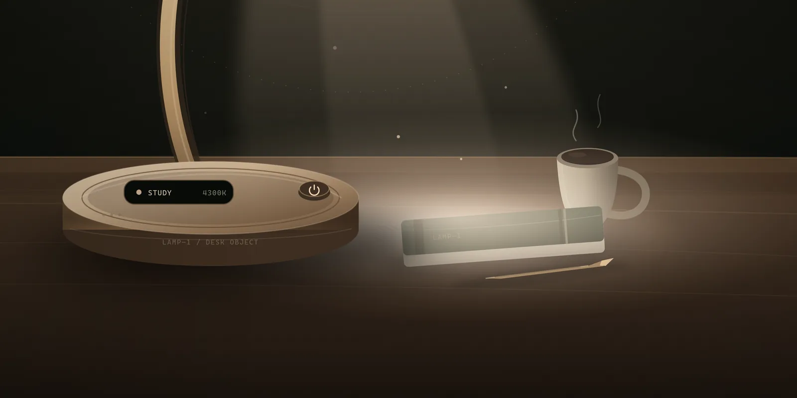
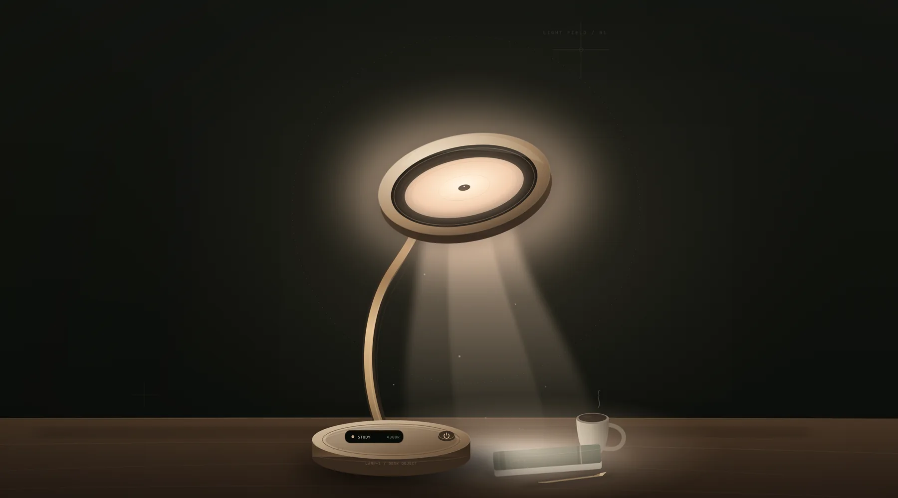

LAMP—1 / LIGHT THAT ANSWERS
光，会回应你。
一盏会动的桌面台灯。双轴云台、双色温混光、离线定时，把智能藏进一束不打扰的光里。
- 色温
- 2700—6500K
- 云台
- 2-AXIS转向 / 俯仰
- 智能
- OFFLINE无云端

01 / THE PREMISE
它先是一盏好灯，
然后才是一盏聪明的灯。
好的桌面光，应该先让眼睛放松。两路 3000K / 6000K 白光混色，从清晨阅读到深夜起夜，都保持同一张桌面该有的安静。
智能只负责让光更合时宜，而不是抢走注意力。
A / 01
5W
双通道 LED
整灯照明功耗
A / 02
500lx
40cm 中心照度
阅读 / 书写设计目标
A / 03
Ra≥90
高显色灯珠
还原纸张与木色
A / 04
2700—6500K
连续混光
五档校准预设
LAMP—1 目前处于概念与 MVP 验证阶段，以上为设计目标，最终以工程样机实测为准。
查看技术与验证边界
HEAD / 2-AXIS PIVOT TILT10—55° PAN
±60°
02 / MOVEMENT
它会动，
但懂分寸。
双轴云台让灯头轻轻转头，或为一个刚学会的遥控键轻点一下。动作慢起慢停，到位后就松开舵机，不留下持续嗡鸣。
俯仰10—55°
转向±60°
运动中×0.7亮度
22:00—07:00 可进入夜间静音：只留光的变化，不发出动作。
在样机里转动它03 / LIGHT RECIPES
不同的夜晚，
需要不同的光。
从 1% 的夜灯到 100% 的阅读光，LAMP—1 用同一枚灯头，留住桌面上的不同时刻。
01 / STUDY
阅读让字迹清晰
暖白光落在纸面上，不打断夜里的安静。
02 / OFFICE
办公屏幕与纸笔之间
更接近日光的中性白，让专注变得清醒。
03 / REST
休息慢下来一盏茶
把桌面收成一团柔光，留一点时间给自己。
04 / NIGHT
夜灯不惊动睡意
刚好够看清脚下，也不会叫醒整个房间。
点击任一配方，直接进入数字样机试光。

IR LEARN / 38 kHz 不必找到 App，也不必知道协议。04 / INDEPENDENT
有些智能，
不必联网。
LAMP—1 学习你原有遥控器的原始信号，再替你按下一次。没有账号、没有云端，也不需要在手机里再装一个 App。
-
01
长按学习键 3 秒
灯头轻点一下，OLED 显示学习槽位。
-
02
用旧遥控器对准它
按下想保留的那个键，灯会校验两次。
-
03
从此，灯替你按
断电不丢，重复两次发射提高首次响应率。

05 / INTERACTIVE TWIN
现在，把光
调到你的此刻。
拖动灯头，调节亮度、色温，或设置一次不会吵醒你的倒计时。所有反馈都在浏览器里实时发生。
打开数字样机
LIVE SIMULATION
CONCEPT STATUS
LAMP—1 目前是一台概念样机。我们先验证光、动作与红外，再决定它应该以什么样子来到桌面。